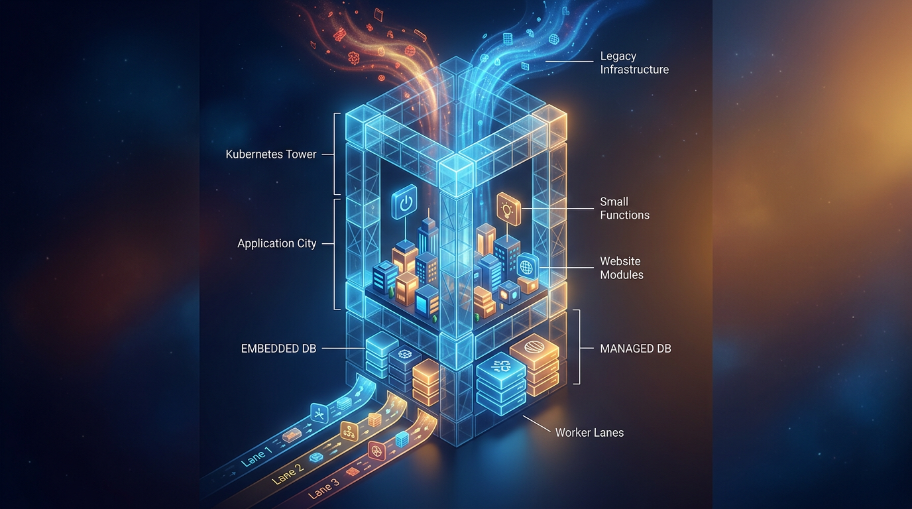

Trabalhar com agentes muda quando pequenas ferramentas começam a tirar atrito do caminho. Não precisa ser uma plataforma gigantesca para alterar o fluxo. Às vezes, o que faltava era um jeito mais simples de subir a infraestrutura, reaproveitar uma sessão de depuração, comparar uma interface recriada ou colocar pessoas e agentes no mesmo espaço.
Este é o tipo de ferramenta que entrou no meu radar agora. Algumas aparecem em anúncios oficiais. Outras chegaram por posts de pessoas que estão acompanhando ou apresentando os projetos. Isso importa: nem todo sinal tem o mesmo peso, e eu prefiro deixar claro o que está documentado na fonte e o que é a minha leitura editorial sobre onde cada ideia pode ser útil.
A lista passa por infraestrutura, depuração, engenharia reversa, interfaces, colaboração e coleta de dados. Não é um ranking. É um mapa de coisas que podem mudar o jeito como você constrói com agentes.

Appwrite Helm chart
O Appwrite Helm chart é o anúncio oficial da Appwrite para rodar o Appwrite em Kubernetes. A proposta inclui bancos de dados embutidos ou gerenciados, Functions e Sites no cluster, três configurações de workers e migrações automáticas de dados durante as atualizações.
Para quem trabalha com agentes, isso conversa diretamente com uma dor pouco glamourosa, mas muito concreta: transformar um projeto que funciona em uma estrutura que pode ser executada de maneira consistente. Quando o agente deixa de apenas gerar código e começa a participar de aplicações reais, a infraestrutura passa a fazer parte da conversa. O ambiente precisa acompanhar o ritmo sem virar um projeto paralelo.
Minha leitura é que o valor aqui está menos em apresentar uma nova camada de complexidade e mais em organizar o caminho para quem já escolheu Kubernetes. As opções de bancos, workers e execução de Functions e Sites dão espaço para diferentes formas de montar o cluster. As migrações automáticas também apontam para uma preocupação importante: atualização não pode ser tratada como um detalhe separado dos dados.
Eu olharia para essa ferramenta se o seu próximo gargalo está entre o protótipo e a operação. Não porque Kubernetes seja automaticamente a resposta, mas porque o chart tenta concentrar no mesmo fluxo as partes que costumam ficar espalhadas. O anúncio é da própria Appwrite, então vejo este item como uma oferta oficial da plataforma, não como uma recomendação independente de terceiros.
Beacon
O Beacon aparece em um post de @jqdsouza, Justin D'Souza, que anuncia o devtool open source em primeiro lugar no Product Hunt. A ideia é transformar sessões passadas de depuração em skills reutilizáveis e compartilhar esse aprendizado entre Claude Code, Cursor, Codex e mais de 20 outras ferramentas.
Para quem passa boa parte do dia investigando falhas, o problema não termina quando o bug é resolvido. A sessão contém decisões, tentativas descartadas, pistas e uma sequência de raciocínio que poderia ajudar na próxima ocorrência. O Beacon está mirando justamente esse pedaço do trabalho: fazer com que uma experiência de depuração não desapareça quando o terminal é fechado.
Minha leitura é bastante favorável à direção. Agentes ficam mais úteis quando conseguem aproveitar contexto acumulado, e depuração é um dos lugares em que esse contexto tem mais valor. Uma skill reutilizável pode funcionar como memória operacional para tarefas futuras, em vez de obrigar a equipe a repetir o mesmo processo do zero.
Ao mesmo tempo, este é um sinal isolado e a fonte é o próprio autor do lançamento. Eu não trataria o post como prova de maturidade, cobertura ou qualidade em todos esses ambientes. Trataria como uma ideia que vale acompanhar, especialmente se você já mantém várias ferramentas de programação e percebe que o conhecimento de uma sessão raramente chega à seguinte.
Craft Anything
Em um post de @rammcodes, Ram Maheshwari diz que o Claude está bloqueando o REA, Reverse Engineer Anything, e apresenta o Craft Anything. O projeto é descrito como uma alternativa que conta com 284 tools e pode rodar como app desktop, CLI e servidor MCP.
A proposta é permitir que o agente faça engenharia reversa de sites, apps e jogos e compare a versão recriada com a original. O mesmo post afirma que quem criou a ferramenta é a equipe responsável por alternativas open source ao Adobe.
Para quem cria produtos a partir de referências visuais, fluxos existentes ou experiências que precisam ser entendidas em profundidade, isso pode ser mais interessante do que simplesmente pedir uma cópia em linguagem natural. A comparação com o original coloca a tarefa em um ciclo mais observável: o agente tenta recriar, olha para o resultado e trabalha a partir da diferença.
Minha leitura é que o Craft Anything aponta para uma mudança importante no uso de agentes. O agente deixa de ser apenas um gerador de telas ou arquivos e passa a atuar como alguém que investiga um sistema existente. Isso é especialmente útil quando a intenção não está documentada, mas o comportamento está disponível para ser observado.
Eu manteria a expectativa no lugar certo. O post é a fonte da apresentação, e o número de 284 tools faz parte dessa descrição. O valor real, para cada projeto, depende de como a ferramenta se comporta diante do site, app ou jogo que você quer estudar. Ainda assim, a combinação entre desktop, CLI e MCP torna o projeto uma proposta ampla para quem quer levar engenharia reversa para dentro do fluxo de desenvolvimento.
Stageshow
Outro projeto apresentado por @rammcodes é o Stageshow. O post diz que o Head of Design do X abriu o código de uma skill que ensina agentes de código a criar interfaces de produto e demos animadas com React.
A skill gera mockups de navegador e app, dashboards, bento grids, cursores animados e walkthroughs. O agente grava o próprio trabalho, revisa os frames e corrige erros visuais. Segundo o post, ela funciona com Claude Code, Codex, Gemini e Grok Build.
Para quem usa agentes na criação de interfaces, isso toca em um ponto que costuma ficar frágil: a apresentação do produto. Uma tela pode estar tecnicamente pronta e ainda assim comunicar mal. Um walkthrough pode explicar uma ideia melhor do que uma sequência de arquivos. Um mockup bem montado pode revelar uma decisão de produto antes que ela fique cara de mudar.
Minha leitura é que o detalhe mais interessante não está apenas na variedade de elementos visuais. Está no agente gravar o próprio trabalho, revisar os frames e corrigir os erros que encontra. Esse ciclo aproxima a geração visual de uma prática de revisão, em vez de tratar a primeira renderização como resultado final.
Eu testaria o Stageshow quando a interface precisa cumprir duas funções ao mesmo tempo: funcionar e demonstrar com clareza o que está funcionando. O fato de ser apresentado como uma skill para diferentes agentes também coloca o projeto em uma categoria prática. Não é uma promessa de substituir design. É uma tentativa de ensinar ao agente um modo mais cuidadoso de construir e mostrar uma interface.
colabora.si
O colabora.si nasceu de uma necessidade contada por @WalterGuzm2202, Walter Guzmán: colocar Claude Code e Codex na mesma equipe sem transformar uma pessoa em intermediária entre ferramentas. A proposta é um espaço compartilhado para pessoas e agentes, com a Trama como agente de IA disponível continuamente para a equipe.
Para quem trabalha em equipe com mais de um agente, a pergunta deixa de ser apenas qual modelo escreve melhor. Também passa a ser: onde as decisões ficam? Como as pessoas acompanham o trabalho? Como um agente entende o que outro agente ou uma pessoa já fez? Um espaço compartilhado tenta atacar esse problema pelo lado da colaboração.
Minha leitura é que esse projeto parte de uma observação muito boa: copiar contexto de uma ferramenta para outra não é colaboração, é intermediação. Quando alguém precisa ficar transportando instruções, resultados e pendências entre Claude Code e Codex, uma parte importante do trabalho está sendo gasta em manter as ferramentas sincronizadas.
A Trama, descrita como um agente disponível continuamente para a equipe, reforça essa ideia de presença compartilhada. Eu vejo o colabora.si como algo para acompanhar se você já percebeu que seus agentes estão isolados em sessões individuais. O post apresenta a motivação e o espaço proposto. A minha curiosidade prática seria observar como esse espaço muda as decisões da equipe ao longo do trabalho, não apenas a troca de mensagens.
Scrapling
Ram Maheshwari apresenta o Scrapling como uma estrutura de código aberto em Python para raspar sites com JavaScript complexo e proteções antirrobô. A publicação também menciona um servidor MCP e uma habilidade de agente de IA que conecta a ferramenta a agentes de programação como Claude Code, permitindo operar por instruções simples.
Para quem precisa coletar dados de páginas que não se comportam como documentos estáticos, essa é uma combinação relevante. Sites com JavaScript complexo podem exigir uma abordagem diferente de uma raspagem tradicional. A camada de MCP e a skill de agente aproximam essa tarefa do fluxo em que o desenvolvedor descreve o que precisa e o agente conduz a operação.
Minha leitura é que o ponto forte do Scrapling está na ponte entre uma ferramenta especializada e uma interface de trabalho mais natural. A coleta de dados costuma ficar separada do restante do desenvolvimento, mesmo quando ela alimenta diretamente um produto, uma análise ou uma automação. Colocar essa capacidade ao alcance de um agente pode reduzir a distância entre perguntar, buscar e usar o resultado.
Eu seria cuidadoso com a parte das proteções antirrobô. O fato de a publicação mencionar esse cenário não transforma a ferramenta em uma solução universal, nem elimina as responsabilidades de quem coleta dados. Ainda assim, como estrutura Python de código aberto com servidor MCP e habilidade de agente mencionados na publicação, o Scrapling merece atenção de quem precisa explorar dados de sites dentro de um fluxo orientado por agentes.
Cloudlet
O Cloudlet é destacado por Ram Maheshwari como um componente gratuito e de código aberto para criar notificações no estilo Dynamic Island em qualquer interface. A proposta transforma avisos comuns em pilhas interativas, com foco em interfaces para desenvolvedores, designers e criadores que usam agentes de IA.
Para quem constrói produtos com muitas tarefas acontecendo ao mesmo tempo, notificações são parte da interface, não um detalhe decorativo. Elas precisam avisar sem interromper, organizar o que aconteceu e permitir que a pessoa entenda o estado do trabalho. Uma pilha interativa pode ser uma maneira mais expressiva de lidar com esses avisos do que uma sucessão de mensagens soltas.
Minha leitura é que o Cloudlet entra no radar por atacar uma parte pequena, mas muito visível da experiência. Agentes ajudam a criar telas, fluxos e automações com velocidade. Se cada ação dispara um aviso comum, a interface rapidamente parece uma coleção de eventos desconectados. A ideia de transformar esses avisos em uma camada interativa pode dar mais continuidade ao que está acontecendo.
Eu olharia para o Cloudlet quando a interface precisa comunicar progresso, mudanças ou resultados sem tomar o controle da tela. O projeto é apresentado como um componente para qualquer interface, então pode interessar tanto a quem está desenhando a experiência quanto a quem está implementando os detalhes. A origem aqui é uma publicação de destaque de terceiro, e não um anúncio oficial da ferramenta, o que é importante manter separado da descrição do projeto.
Como escolher o que testar
Eu não começaria tentando testar as sete ferramentas ao mesmo tempo. O melhor ponto de partida é o gargalo que está mais caro no seu fluxo hoje.
- Se o problema é infraestrutura, comece pelo Appwrite Helm chart e veja se a execução do Appwrite em Kubernetes se encaixa no ambiente que você já usa.
- Se você repete investigações de bugs, acompanhe o Beacon e observe se transformar sessões de depuração em skills reutilizáveis faz sentido para o seu trabalho.
- Se você precisa entender uma referência existente, explore o Craft Anything pensando na comparação entre a versão recriada e o original.
- Se o gargalo está na apresentação da interface, experimente o Stageshow para avaliar o ciclo de criação, gravação, revisão dos frames e correção visual.
- Se os agentes estão isolados, olhe para o colabora.si e veja se um espaço compartilhado resolve a intermediação entre pessoas, Claude Code, Codex e a Trama.
- Se a coleta de dados trava o produto, investigue o Scrapling e a conexão mencionada com agentes de programação por MCP e skills.
- Se a experiência está cheia de avisos dispersos, considere o Cloudlet como uma forma de dar mais estrutura às notificações.
O meu critério seria simples: escolher uma ferramenta que encoste em um atrito real, testar no fluxo em que esse atrito aparece e observar o que muda depois da primeira tentativa. Não basta a ideia parecer boa. Ela precisa devolver tempo, clareza ou continuidade para o trabalho.
Ferramentas pequenas entram no radar justamente porque podem mudar uma etapa específica sem exigir que você reorganize tudo de uma vez. É assim que eu acompanharia esta lista: com curiosidade, mas também com distinção entre anúncio, post de terceiro e experiência prática. O próximo teste mais interessante costuma ser o que remove o trabalho repetitivo que você já sabe que não deveria continuar fazendo.